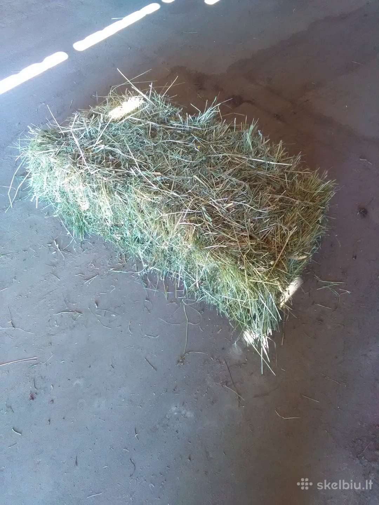

GAMTINĖ ŽEMDIRBYSTĖ • Temos rodymas - Šienas Kraikas, šienas graužikams. Nusprendusiems savo šeimą papildyti mielu graužiku, jo priežiūrai tenka paskirti ne mažiau dėmesio nei bet kokiems kitiems augintiniams. Tam prireikia ne tik kantrybės, bet ir atitinkamų priemonių – tarp jų visuomet minimas ir kraikas, šienas graužikams. Norėdami, kad šie gaminiai pateisintų ...
Šienas, šiaudai: koks skirtumas? - Planeta - 2020 Šienas . Šis skelbimas neaktyvus. Paskelbta: kovo 2 d. Pardudu šiena . Kaina sutartinė. Jus galėtų sudominti. 10 € rapsų sėklų išspaudos 10eur. 16 € ...
Orai Šienas - tiksli ir išsami oro prognozė Šienas ... Šienas yra 2019 metų gamybos, pievos yra natūralios priklausančios, natura 2000 folderio zonai. ŠIUO METU RULONŲ LIKO IŠ 300 vnt, TIK 115 vnt. Atvežam į namus 30 kilometrų spinduliu, didesnius kiekius rulonų.
Dekoratyviniai akmenys - Sodo dekoracijos - Senukai.lt Šienas – miestas pietų Norvegijoje, Grenlando regione, šalia Pošgriūno. Geležinkelio stotis, oro uostas. Išvystyta energetikos pramonė. Veikia Telemarko muziejus. Žymūs žmonės. Šiene gimė rašytojas Henrikas Ibsenas (1828–1906). Čia 1958 m. įkurtas jo muziejus. Sportas. Odd Grenland BK (futbolas)

X Dėl geresnės Skelbiu.lt paslaugų kokybės naudojame slapukus (angl. cookies). Naršydami toliau, patvirtinate, kad sutinkate su slapukais. Tai bet kada galėsite atšaukti, pakeisdami nustatymus. Skelbiu.lt slapukų politika . Lankomiausias skelbimų portalas LT RU ( 0 ) Įsiminti skelbimai ( 0 ) Peržiūrėti skelbimai Paieškos ( 0 ) Prisijungti Registruotis sienas parduodu, Visi skelbimai (77) Gauti naujus skelbimus: Ekrane El. paštu + Įdėti skelbimą Įsiminti skelbimai (0) Skelbimų: 77 Tinkamiausi viršuje Tinkamiausi viršuje Naujausi viršuje Atnaujinti viršuje
NEPRALEISKITE NAUJŲ SKELBIMŲ
sienas parduodu, Visi skelbimai
Gaukite naujus skelbimus į ekraną Gaukite naujus skelbimus el. paštu Kita spalio 24 d. 1
Pervezu jūsų pasarus, turiu pardavimui savo eko
Parduodu taip pat ir pagal susitarimą atvežu įvairaus šienainio, kukurūzų siloso rulonuose, šiaudus, šieną, avizu-vikiu misinio. Galiu pervežti Jūsų pašarus į vietą. Taip pat galiu pervežti grūdus. Šienainis, avižų - vikių mišinys, kukurūzai... 10 € Vilnius, ... prieš 1 d. 1
Tarybiniu laiku studentu paveikslai 500+ vienetu
Parduodu virš 500 vnt. 30-50 metu senumo studentu paveikslu 1500 eur už visus, po mažiau nei 3 eur už vnt. Galėtumėt pilnai išdekoruot dideles erdves, papuošt tuščias sienas. Jeigu domina, rašykit, persiusčiau daugiau nuotrauku. Redaguota:... Būklė: naudota 1 500 € Kaunas rugpjūčio 16 d.
Parduodu geros kokybės dekoracijos sienas .kaina15€
Labai geros kokybės Šilutės r. prieš 1 d.
Sieninės plokštės
Parduodu plokštes, kuriomis galima daryti sienas. Plokščių plotis 1 m, ilgis 2,4 m arba 2,87 m. Tarp plokščių dedasi vata. Plokštės tvirtinamos metaliniais profiliais, o pačios įsistato specialiais tvirtinimais. Kaina 6 eurai 1 kv/m, kurį sudaro... Būklė: naudota 6 € Alytaus r. spalio 5 d.
Parduodu šienainį ir šieną rulonuose.
Parduodu aukštos kokybės šienainį, šieną už savikainą. Šienainis iš sėtinės žolės, vyrauja liucerna. Kaina už šienainį 18-22 eur. Šienas 8-10 eur. Šienainio yra 300 rulonų, šieno apie 200 rulonų. Suktas su McHale presu. 20 € Švenčionių r. spalio 8 d.
Rąstinio namo sienos
Parduodu netradicinio rąstinio namo sienas (išsivežimui), du sujungti šešiakampiai, sienų storis 18 cm, ilgis ~5.5 m, šešių sienų aukštis 4 m (buvo planuojamas dviaukštis pastatas), penkių sienų aukštis 3 m, bendras vidaus plotas (per 2+1... Būklė: nauja 15 000 € Utenos r. prieš 1 d.
Parduodu Sienas 14 eur Utena
Sienas 2020 metu 15 eur ir sienainis 14 € Vilniaus r. prieš 1 d.
Parduodu šienas ir šiaudos kitkos 2020 m.
Ūkininkas parduoda presuotas 2020 m. šienas ir šiaudos kitkomis, šienas labai gražus po lietum nebuves, dideli kitkos. Kaina sutartinė. Galiu atvežti transportas pagal susitarima. 868167446 tel. Būklė: nauja Pagėgiai spalio 3 d.
Parduodu šieno rulonus.
Parduodu šieną. Šienas laikomas po stogu, rulonai susukti be lietaus, diržiniu John Deere presu (daugiau masės), normalaus 1.3m - 1.4m. dydžio, kieti, be saidrių. Yra 500 ir daugiau vienetų. Vilkyškiai, Pagėgių savivaldybė. 868584792 10 € Vilnius prieš 1 d.
Parduodu pavesinę
Parduodu pavesinę: (su stalu ir suoliukais) Ilgis 2m, plotis 1,8m Stogas bituminės čerpelės Mediena pušis,obliuota impregnuota Stogo spalvos gali keistis Pavesinės matmenys gali keistis Galime įrengti grindis,apkalt sienas. Yra... Būklė: nauja 300 € Reklama Vilnius prieš 1 d.
Idėja dovanai - mano tapyti paveikslai
Parduodu savo tapytus vienetinius paveikslus, visi laisvi paveikslai su kainomis instagram nuorodoje: Sekite mane instagrame: https://www.instagram.com/spalvotossienos/ Pradžiuginkite artimuosius arba papuoškite savo namų sienas suteikdami... Būklė: nauja 50 € Kaunas spalio 23 d.
Kioskas - paviljonas
Parduodu prekybinius kioskus. Kioskeliai turi vidinę metalo konstrukciją ( kuri užtikrina kioskelio ilgaamžiškumą ) plastikines sienas nebijančias saulės ir drėgmės poveikio , sienos apšildytos 5cm stiklo vata, langai 22mm stiklo paketai, stogas... Būklė: naudota 700 € Alytus prieš 1 d.
Dainuojantis traukinių miestelis Fisher Price
Parduodu mechaninį Fisher price dainuojantį traukinuką su traukinių miesteliu. Pilnas komplektas, bėgiai jungiasi tarpusavyje, galimas ir kitoks bėgių sujungimas negu pavaizduota nuotraukoje. Dydis surinkto 150 cm x 100 cm. Pilnas komplektas,... Būklė: naudota 20 € Vilnius, ... spalio 25 d.
360 S9 robotas siurblys
Parduodu visiškai naują, neišpakuotą 360 S9 robotą siurblį, kuris galingai siurbia bei plauna vienu metu. Vienas pažangiausių pagal kainą: naudoja Lidar bei Ultranosic sensorius vienu metu (iš viso net 25), iki 180 min. veikimo laikas, itin... Būklė: nauja 420 € Vilniaus r., ... prieš 3 d.
Šienas rulonais 8€
Parduodu šių metų šieno rulonus po 8€. Šienas presuotas Birželio mėnesį su ruloniniu bugniniu presu ir surištas tinklu. Šienas nebuvo sulytas ir Liepos mėnesi buvo suvežtas ir sudėtas į kūgį ant palečių, bei uždengtas tentu. Rulono dydis... 8 € Vilnius rugsėjo 19 d.
Parduodu namą 7,5a sklype Žvėryne, Lenktojoje
Vilnius, Žvėrynas, Lenktoji g. 270 m² | 7,50 a | 5 kamb. | Įrengtas | Dujinis 850 000 € (3 148 €/m²) Utenos r. prieš 1 d.
Šienainio Ir šieno rulonai
Parduodu šienainio ir šieno rulonus. Eko statusas. 5 km nuo Utenos. Kaina su pakrovimu. Žolė pjauta ankstyvoje vegetacijos stadijoje. Kokybė ir maistingumas tikrai geri. Vyrauja isėtinis dobilas. Rulonai 1.25m, sunkus, gerai suspausti. Daryti... 25 € Mažeikių r. spalio 13 d.
Šienas su plėvele
Dideliai ir mažais kiekiai parduodu šių metų šieną su plėvele. Šienas yra apviniotas aukštos kokybės ,RANI plėvele, 28 kartus vienam rulonui. Todėl pasitaiko labai mažai papelėjusiu vietų, nei viniojant tik 24 kartus kaip yra rekomenduojama.... 1 € Kauno r. spalio 18 d.
Skambinti arba .
Kauno r., Smiltynų II k., Ąžuolų tak. 50 m² | 5,79 a | 2 kamb. | Įrengtas | Centrinis | Kietu kuru 37 000 € (740 €/m²) Vilnius, ... prieš 2 d.
Melamino kempinėlės-kompl.
Parduodu Vokiškas Melamino kempinėles komplekte yra 2 vnt. kempinėlių - 1.70€/kompl. Liko 2komplektukai, tiek nereikia, nesunaudoju, nes valosi ekonomiškai. Kempinėlė-TRINTUKAS lengvai pašalina purvo žymes nuo sienų ar baldų, susidoroja su... Būklė: nauja 1,70 € Zarasų r., ... rugsėjo 17 d.
Parduodu beržo ir alksnio malkas Zarasų rajone
Parduodame juodalksnio, beržo ir baltalksnio malkas Zarasų rajone. Supjautos kaladėlėmis. Pristatome į vietą po 5 kubus (7,14 erdmetrių). Apmokėjimas po pristatymo. Kaina svyruoja nuo 170 iki 220 eur/priekaba, priklausomai nuo pasirinktos... 1 € Klaipėda, ... prieš 2 d.
Melamino kempinėlės
KAINA 1vnt. - 0.10€. (Parduodu mažiausią kiekį 20vnt.) Parduodu MELAMINO baltas kempinėlės - trintukus. Siunčių į kitus miestus Dėl kempinėlių galite rašyti el.paštu: mkempineles@gmail.com Parašykite kiek kempinėlių norite, nurodykite: Miesta... Būklė: nauja 0,10 € Kaunas, ... spalio 20 d.
Parduodu nedidelę rūkyklą karštam rūkymui
Nedidelė rūkykla karštam mėsos, žuvies ar paukštienos rūkymui. Rūkykla galėsite puikiai naudotis sode, sodyboje ar privataus namo kieme. Rūkyklos rūkinimo kameros sienos dvigubos: pagamintos iš dviejų metalo lakštų. Taigi dūmai, kylantys iš... Būklė: nauja 280 € Šiauliai spalio 5 d.
Šienas ir šienainis, šiaudai rulonais
Parduodu šieną rulonais, 1vnt kaina 25Eur, bei šienainio- rulonus (dobilai,motiejukas), 1vnt. kaina 30Eur, kukurūzų siloso rulonai - 50eur/t, šiaudus- 1vnt. kaina 15eur. Už papildomą mokestį galiu atvežti Būklė: nauja 30 € 1 2 3 4 Įsiminti skelbimai Įdėkite skelbimą Prisijunk ir rask savo įsimintus skelbimus visur – kompiuteryje, telefone, planšetėje ARBA Jungtis su Facebook Jungtis su Google Skelbiu.lt pagalba: +370 664 55727 Darbo laikas: I-V 08:20 - 17:00 Naudojimo taisyklės / D.U.K. Kontaktai Svetainės struktūra D I G I N E T